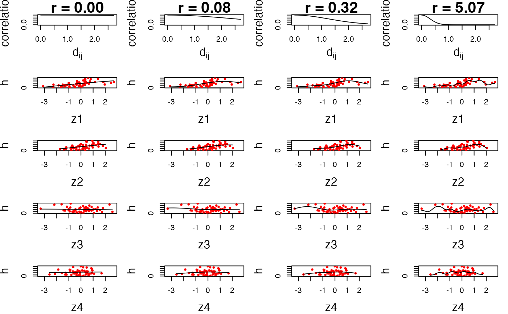

Investigate the impact of the r[m] parameters on the smoothness of the exposure-response function h(z[m]).
Usage
InvestigatePrior(
y,
Z,
X,
ngrid = 50,
q.seq = c(2, 1, 1/2, 1/4, 1/8, 1/16),
r.seq = NULL,
Drange = NULL,
verbose = FALSE
)Arguments
- y
a vector of outcome data of length
n.- Z
an
n-by-Mmatrix of predictor variables to be included in thehfunction. Each row represents an observation and each column represents an predictor.- X
an
n-by-Kmatrix of covariate data where each row represents an observation and each column represents a covariate. Should not contain an intercept column.- ngrid
Number of grid points over which to plot the exposure-response function
- q.seq
Sequence of values corresponding to different degrees of smoothness in the estimated exposure-response function. A value of q corresponds to fractions of the range of the data over which there is a decay in the correlation
cor(h[i],h[j])between two subjects by 50%.- r.seq
sequence of values at which to fix
rfor estimating the exposure-response function- Drange
the range of the
z_mdata over which to apply the values ofq.seq. If not specified, will be calculated as the maximum of the ranges ofz_1throughz_M.- verbose
TRUE or FALSE: flag indicating whether to print to the screen which exposure variable and q value has been completed
Value
a list containing the predicted values, residuals, and estimated predictor-response function for each degree of smoothness being considered
Details
For guided examples, go to https://jenfb.github.io/bkmr/overview.html
Examples
## First generate dataset
set.seed(111)
dat <- SimData(n = 50, M = 4)
y <- dat$y
Z <- dat$Z
X <- dat$X
priorfits <- InvestigatePrior(y = y, Z = Z, X = X, q.seq = c(2, 1/2, 1/4, 1/16))
PlotPriorFits(y = y, Z = Z, X = X, fits = priorfits)
